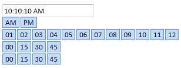
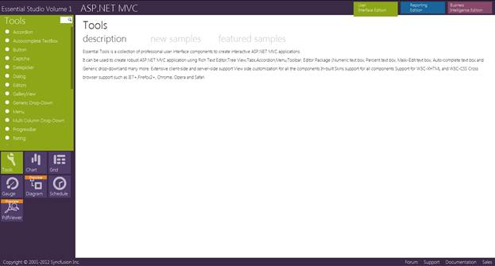
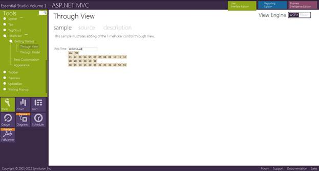

Refer to the Getting Started section for the prerequisites needed to add the TimePicker control to an ASP.NET MVC application.
The following steps explain how to add a time picker control.
1. In the view, invoke the TimePicker helper with the control ID as the first argument.
|
[ASPX] <%=Html.Syncfusion().TimePicker("TimePicker").Value("10:10:10") %> |
|
[Razor] @Html.Syncfusion().TimePicker("TimePicker").Value("10:10:10")
|
2. Build and run the application.

Figure 279: TimePicker Control
Locally Installed Samples
To view the samples:
4. Open the Dashboard. The Essential Studio Enterprise Edition window is displayed, and the User Interface Edition panel is displayed by default.
5. Click the Run Locally Installed Samples link. The Essential Studio for ASP.NET MVC sample browser is displayed.
6. Select Tools at the bottom-left of the screen.

Figure 280: MVC Tools Sample Browser
7. Select any sample from the TimePicker item provided and browse through the features.

Figure 281: Sample Browser for the TimePicker Control
Source Code Location
The full source code of the TimePicker control will be available on the purchase of the product.
The default location of the Essential Tools for ASP.NET MVC source code is:
[System Drive]:\Program Files\Syncfusion\Essential Studio\[Version Number]\MVC\Tools.MVC\Src